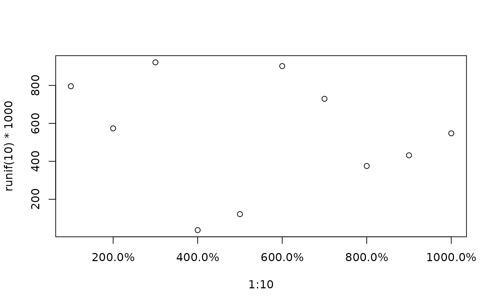
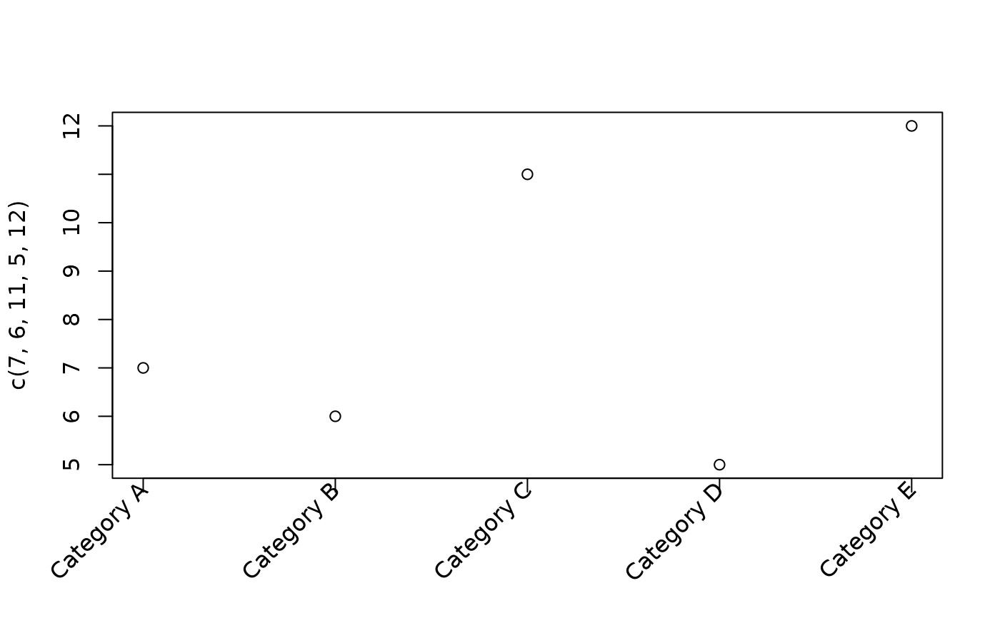

A drop-in replacement for graphics::axis() that adds two conveniences:
tick labels can be formatted through fm() via the fmt argument,
and labels can be drawn at an arbitrary angle using srt (which
graphics::axis() itself ignores). When rotated labels are requested the
function also estimates the margin space they require and, optionally,
widens the corresponding plot margin so the labels are not clipped.
Usage
axisFmt(
side,
at = NULL,
fmt = NULL,
labels = TRUE,
srt = NULL,
adj = NULL,
estimateMar = TRUE,
...
)Arguments
- side
integer specifying which side of the plot the axis is drawn on, as in
graphics::axis():1= below,2= left,3= above and4= right.- at
numeric vector of tick positions. If
NULL(default) the positions are determined withgraphics::axTicks().- fmt
format specification passed to
fm()to format the tick labels. IfNULL(default) the labels are used as they are (or the bare tick values, coerced to character). See Details.- labels
either a logical or a character vector of labels. If
TRUE(default) the labels are generated fromat(formatted withfmtif supplied). A character vector is used verbatim.- srt
numeric, the string rotation angle in degrees. If
NULL(default) labels are drawn horizontally through the ordinarygraphics::axis()mechanism. Any other value triggers the rotated-label path described in Details (a common choice for long category names issrt = 45).- adj
label justification passed to
graphics::text(). IfNULLa sensible default is chosen fromsideand the rotation: right aligned with the tick for the x-axes (c(1, 0.5)) and bottom aligned for the y-axes (c(0.5, 0)).- estimateMar
logical. If
TRUE(default) andsrtis set, the margin onsideis temporarily widened to the estimated space needed by the rotated labels (restored on exit). Set toFALSEto leave the margins untouched.- ...
further arguments passed to both
graphics::axis()(for the line and ticks) andgraphics::text()(for the labels). Graphical parameters shared by the two (e.g.col,cex) therefore affect both.
Value
invisibly, a list with components at (the tick positions
used) and mar (the estimated margin requirement in lines for the
rotated labels, or NA when srt is NULL).
Details
The fmt argument is passed straight to fm() and therefore accepts
the full range of format specifications: a special short code (e.g.
"%", "e", "eng", "p"), an ISO-8601 date
pattern (e.g. "MMM yyyy"), a Style object, a bare (named)
list treated as a style template (e.g. fmt = list(digits = 1,
bigMark = " ")), or a function of x. See fm() for the details.
When srt is set, the axis line and ticks are drawn without labels
via graphics::axis(), and the labels are added separately with
graphics::text() using xpd = TRUE so they may extend into the
figure margin. The required margin width is estimated by projecting the
rotated label boxes onto the axis normal (see estimateMar).
Note that changing par("mar") after the plot region has been
established does not resize the existing region. When estimateMar
is TRUE the widened margin therefore mainly ensures enough device
space outside the plot region for the (xpd = TRUE) labels. For a
clean layout, set the margin before calling graphics::plot(); the
returned mar component reports the estimated requirement so a
calling routine can reserve the space in advance.
Author
Andri Signorell andri@signorell.net
Examples
# formatted tick labels
plot(1:10, runif(10) * 1000, yaxt = "n", xaxt = "n")
axisFmt(2, fmt = list(digits = 0, bigMark = " "))
axisFmt(1, fmt = list(fmt = "%", digits = 1))

# rotated category labels (margin widened automatically)
plot(1:5, c(7, 6, 11, 5, 12), xaxt = "n", xlab = "")
axisFmt(1, at = 1:5, labels = paste("Category", LETTERS[1:5]), srt = 45)
